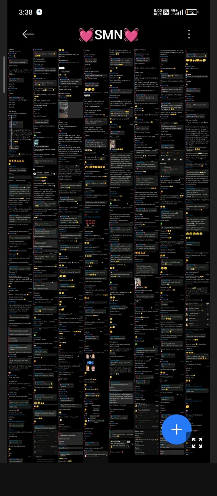

>
01
The random conversations.
Somehow, even the simplest conversations became something I wanted to remember.
Some dates are just dates...
and some become memories.
TIME SINCE THAT DAY
And somehow, that ordinary date became one I'll always remember.
Every story has a beginning.

Some moments don't look important
when they happen.
You only realize later
that they were the beginning.
It was the little things...
the random conversations,
the smiles,
and all those moments
that slowly became ours.

>Somehow, even the simplest conversations became something I wanted to remember.

The moments that probably meant nothing to the world, but meant everything to me.

Nothing planned. Nothing extraordinary. Just moments I never wanted to forget.

And maybe that's what made everything feel so special.
Maybe that's what memories really are...
ordinary moments that became extraordinary
because they were ours.
Not every moment needed a photograph.
Some were simply worth remembering.
The day everything quietly started.
A simple conversation that became the beginning of something more.
Conversations, smiles, memories... one moment slowly becoming another.
And somehow, there are still so many moments left to make.
Some dates mark a moment.
Some moments become a story.
To the person who made an ordinary beginning feel extraordinary...
I don't know if every important moment is supposed to feel important when it happens.
Maybe that's what makes memories so beautiful.
We don't always realize we're living a moment we'll one day wish we could experience again.
But somewhere along the way, the little conversations, the random smiles, and all those simple moments started becoming some of my favorite memories.
And if I could go back to the beginning... I wouldn't change a thing.
Because that's where our story began.
I realized something.
It was never about one perfect moment.
It was about all of them.
Every conversation.
Every smile.
Every little memory.
And some are meant to keep being written.
You became one of my favorite parts of this life.
And if this is only the beginning...
I can't wait to see where our story goes.